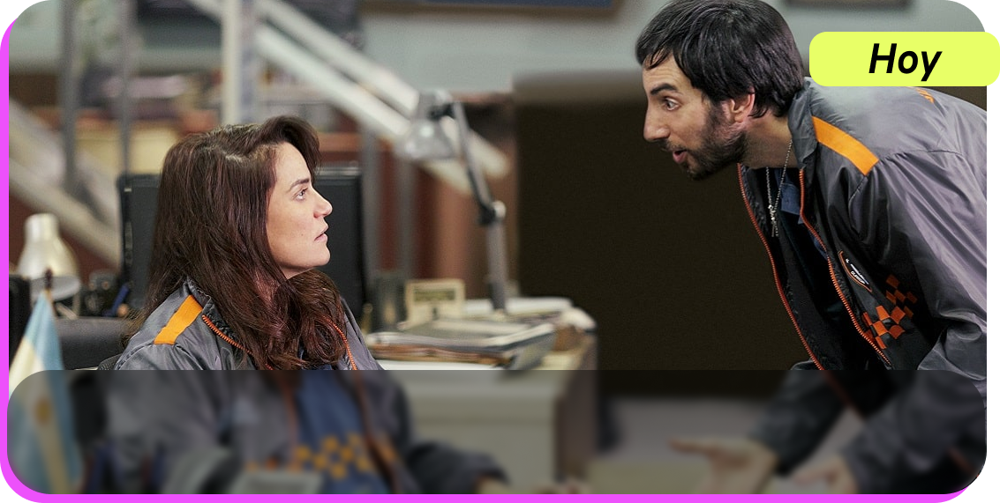
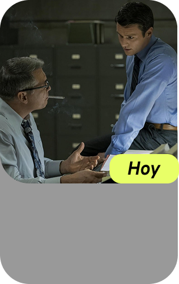
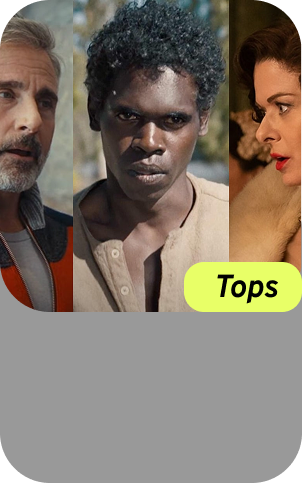

T&K en Córdoba Sábado 26 de julio Louta en Sala Sinpiso Sábado 9 de diciembre Dillom anuncia show en Vélez Jueves 11 de septiembre Placar en Matienzo Lunes 23 de Junio María Pien y Carmen Sánchez Viamonte Domingo 22 de Junio Sueño de Pescado en Temperley Sábado 28 de junio 8 historietistas hablan sobre la importancia del gran cómic argentino 5 historietas argentinas de ciencia ficción 5 libros que llegan a la pantalla este año y tenés que leer 4 libros de Leila Guerriero para adentrarse en su literatura El documental sobre la historieta argentina para ver en YouTube  Vuelve División Palermo: Tráiler y fecha de estreno  Mindhunter podría volver  3 películas nuevas en Prime Video La historia real en Tiempo de guerra Rosario Tijeras volvió con su cuarta temporada
8 historietistas hablan sobre la importancia del gran cómic argentino 5 historietas argentinas de ciencia ficción 5 libros que llegan a la pantalla este año y tenés que leer 4 libros de Leila Guerriero para adentrarse en su literatura El documental sobre la historieta argentina para ver en YouTube